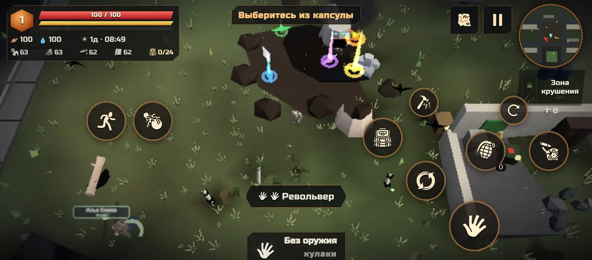

01 / Добыча
Каждая находка нужна
Обыскивай окружение, собирай ресурсы и выбирай снаряжение для следующего выхода.
Предметы и улучшения
У оружия есть грейды и шесть уровней редкости. Улучшай его заточкой до +16, разбирай ненужное и сливай три одинаковых предмета.